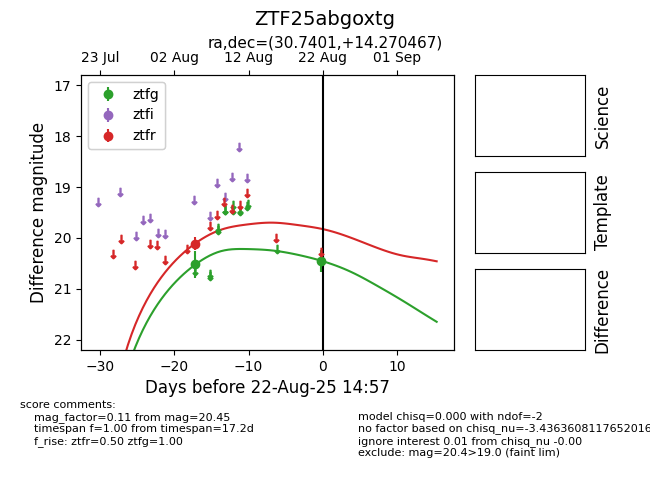

Target ZTF25abgoxtg at 2025-08-22 14:57, see:
FINK: fink-portal.org/ZTF25abgoxtg
Lasair: lasair-ztf.lsst.ac.uk/objects/ZTF25abgoxtg
ALeRCE: alerce.online/object/ZTF25abgoxtg
alt names
ZTF25abgoxtg (ztf,alerce)
coordinates:
equatorial (ra, dec) = (30.7401,+14.27047)
galactic (l, b) = (147.8692,-45.11010)
photometry
last ztfg=20.45, ztfr=20.11
2 ztfg, 1 ztfr detections
